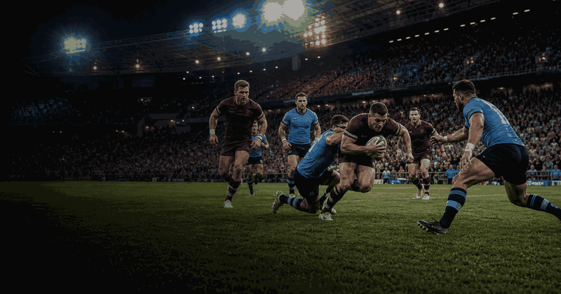
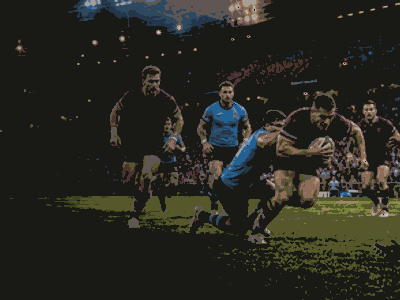

rugby event guide
State of Origin
The best-of-three rugby league series between New South Wales and Queensland. Use this page for the evergreen format, the 2026 venue-by-venue guide, and match updates as the series unfolds.
First series1980
FrequencyAnnual
Current edition2026
FormatBest of 3
History viewEdition results and parts
Use the year switcher for recent editions. The selected edition stays inside this framed sport view.

More rugbyInterested in more rugby?Explore related events, places and calendar moments.